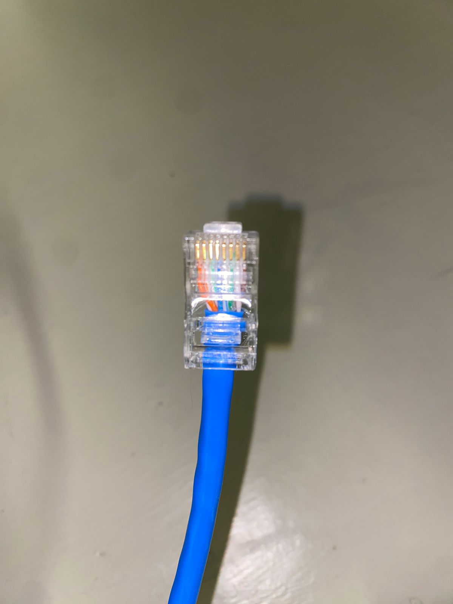

Portafolio de Actividades
Laboratorio de Redes Digitales
Departamento de Ciencias e Ingenierías | Universidad Iberoamericana Puebla, México.
Cables de Red
- Resumen -
En esta práctica se elaboraron y comprobaron cables de red estructurados tipo directo y cruzado, utilizando cable UTP, conectores RJ-45 y una pinza ponchadora. Se armaron tres cables de cada tipo y se verificó su correcto funcionamiento mediante pruebas de conectividad. Esta actividad permitió entender la estructura interna de estos cables, así como su aplicación específica en redes de comunicación.
- Introducción -
El cableado estructurado es una parte esencial en cualquier red de datos, ya que permite la transmisión de información entre dispositivos. Existen distintos tipos de configuración para estos cables, entre los más comunes están el cable directo y el cruzado. El cable directo se utiliza para conectar dispositivos diferentes (por ejemplo, PC a switch), mientras que el cable cruzado se emplea para conectar dispositivos iguales (por ejemplo, PC a PC). El conocimiento de cómo armar y probar estos cables es fundamental para cualquier técnico en redes.
- Materiales -
1 LED
Cable de red (UTP, categoría 5e o superior)
Conectores RJ-45
Pinza ponchadora (crimpadora)
Probador de cables de red (tester)
Tijeras o navaja para pelar cable
- Desarrollo -
La práctica comenzó con una investigación teórica enfocada en los dos tipos principales de cables de red estructurados: el cable directo y el cable cruzado. Se revisaron los estándares internacionales T568A y T568B, los cuales establecen el orden de los ocho hilos internos del cable UTP. Se comprendió que el cable directo utiliza el mismo estándar en ambos extremos (ya sea T568A o T568B) y que se emplea para conectar dispositivos distintos entre sí, como una computadora a un switch o un router. En cambio, el cable cruzado combina el estándar T568A en un extremo y T568B en el otro, y se utiliza para conectar dispositivos del mismo tipo, como dos computadoras entre sí o dos switches. Una vez comprendida la teoría, se procedió a la preparación del material. Se cortaron seis tramos de cable de red UTP, cada uno de aproximadamente un metro de largo. Tres de estos cables serían destinados para la elaboración de conexiones directas y los otros tres para conexiones cruzadas. Además, se dispusieron conectores RJ-45 nuevos y se verificó que estuvieran en buen estado, sin deformaciones o daños que pudieran interferir con la correcta conexión de los hilos.
Con el cable listo, se utilizó una pinza peladora para retirar cuidadosamente la cubierta externa de cada extremo, dejando expuestos alrededor de dos centímetros de los hilos internos. Luego se separaron, alinearon y estiraron los ocho hilos de cobre de cada cable en el orden correspondiente al estándar que se estuviera utilizando. Este paso resultó fundamental, ya que un error en la organización de los hilos podría provocar una falla en la conexión y dificultar el funcionamiento de la red.
Después de ordenar los hilos correctamente, se introdujeron con precisión dentro del conector RJ-45, asegurándose de que llegaran hasta el fondo del conector y de que mantuvieran el orden establecido. Posteriormente, se utilizó una pinza ponchadora para fijar firmemente los hilos dentro del conector, asegurando un buen contacto eléctrico y una sujeción estable.
Una vez armado cada cable, se procedió a realizar pruebas de funcionamiento utilizando un probador de red. Este dispositivo permitió verificar la continuidad eléctrica de los cables y comprobar que los hilos estuvieran correctamente conectados y en el orden apropiado. Al conectar ambos extremos del cable al probador, se observaron luces indicadoras que mostraban la numeración del 1 al 8. Una secuencia correcta confirmaba que el cable estaba bien armado; si alguna luz no encendía o lo hacía de forma incorrecta, se interpretaba como una falla en la conexión, ya fuera por mal ponchado o desorden en los hilos.
El proceso de corte, pelado, armado, ponchado y prueba se repitió para cada uno de los seis cables, prestando especial atención a mejorar la precisión y calidad en cada repetición. Al finalizar esta etapa, se contaba con tres cables directos y tres cables cruzados completamente funcionales y correctamente verificados. Esta experiencia permitió no solo reforzar los conocimientos teóricos sobre cableado estructurado, sino también desarrollar habilidades prácticas esenciales para cualquier trabajo de instalación o mantenimiento de redes. La familiarización con las herramientas, la comprensión de los estándares y la capacidad para detectar y corregir errores durante el armado de los cables resultaron ser aprendizajes clave durante la práctica.
Construcción
Se cortaron seis tramos iguales de cable de red (aproximadamente 1 metro cada uno). Se pelaron los extremos y se ordenaron los hilos internos conforme a los estándares correspondientes. Se colocaron los hilos dentro de los conectores RJ-45 y se usó la pinza ponchadora para fijarlos. Se probaron los tres cables directos y los tres cables cruzados utilizando el probador de red, verificando que cada hilo estuviera bien conectado y sin cruce indebido de pares.

- Resultados -
Cables directos (3): Todos pasaron las pruebas de continuidad y orden correcto de hilos. Cables cruzados (3): Todos funcionaron correctamente tras seguir el estándar de conexión. Se comprobó que los cables armados permiten la correcta comunicación entre dispositivos de red.

- Conclusiones -
ELa práctica permitió familiarizarse con la estructura y armado de cables de red. Se comprendió la diferencia funcional entre el cable directo y el cruzado, así como su correcta construcción. El uso del probador de red fue fundamental para asegurar la calidad del trabajo. Este conocimiento es clave para el diseño, instalación y mantenimiento de redes de datos eficientes y seguras.
- Referencias -
Microchip AVR® microcontroller primer: programming and interfacing, third edition (synthesis lectures on digital circuits and systems), BARRETT, Steven F. Pack Daniel J., Editorial Morgan & Claypool, 2019.
K. He, X. Zhang, S. Ren and J. Sun, "Deep Residual Learning for Image Recognition," 2016 IEEE Conference on Computer Vision and Pattern Recognition (CVPR), Las Vegas, NV, USA, 2016, pp. 770-778, doi: 10.1109/CVPR.2016.90.
J. D. Hunter, "Matplotlib: A 2D Graphics Environment," in Computing in Science & Engineering, vol. 9, no. 3, pp. 90-95, May-June 2007, doi: 10.1109/MCSE.2007.55.